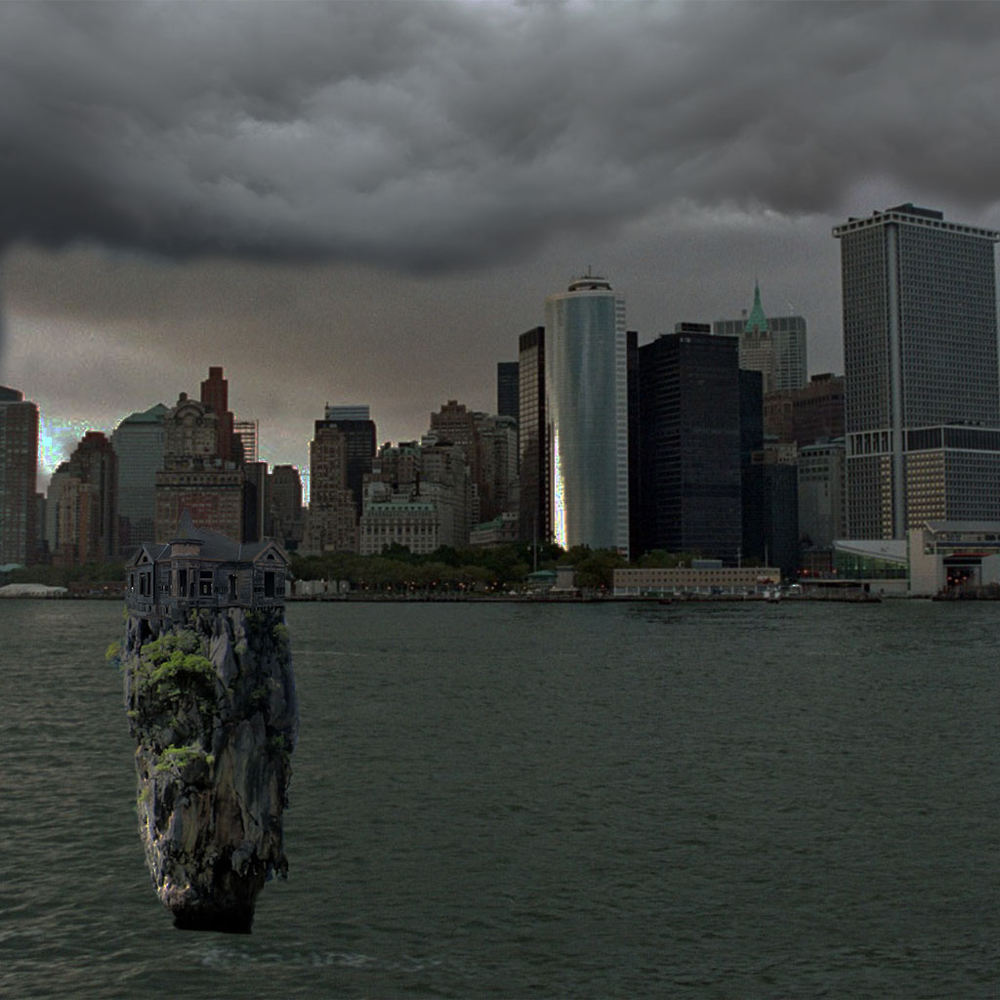

The Island is the the place where Lone lives. He lives alone in a little island not to far away from the city. He typically stayes in his own place island because he is't all that welcomed in the city because he scares people off because of his mask. But also because he isn't the most social perosn you'll meet. The enviroment where lives isn't always sunny it's mainly in that kind of mood where things are a little more serious. Most of the time it's cloudy or rains.
